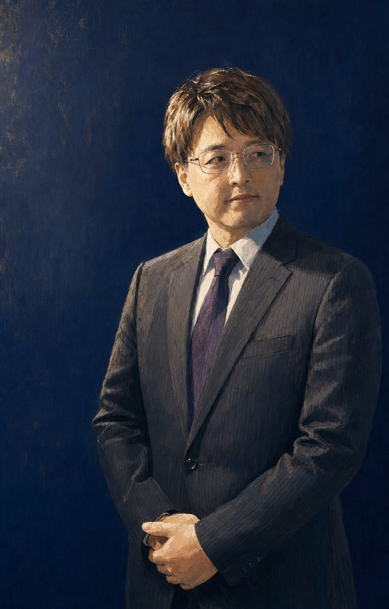

複雑性の整理
制度・技術・利害が絡み合った課題を構造化し、「何が問題で、どの順に解くべきか」を関係者全員が同じ地図で見られる状態にします。
Akito Hirooka — Personal Site
変革実装型プロジェクトリーダー／DXリーダー
複雑な制度・技術・組織の課題を構造化し、
関係者が動ける「言葉」と「仕組み」に翻訳する。
そして、現場に定着するまで、完遂する。
Value
肩書よりも、何を引き受けられるか。私が提供するのは知識ではなく、「変化が現場に根づくまでの全工程」です。
制度・技術・利害が絡み合った課題を構造化し、「何が問題で、どの順に解くべきか」を関係者全員が同じ地図で見られる状態にします。
技術者の言葉を経営と現場の言葉に、現場の暗黙知を仕様の言葉に。立場の違う人々が同じテーブルで意思決定できる「共通言語」をつくります。
ツール選定から導入、運用設計、定着まで一気通貫。「導入して終わり」を許さず、計画が現実に動くところまで責任を持ちます。
新しい仕組みは、使われてはじめて意味を持ちます。研修で終わらせず、日々の業務の中で「使うことが習慣になる」状態まで設計します。
生成AIをはじめとする新技術を、話題ではなく業務価値に。実務適合性・コスト・ガバナンスの3つの視点で、組織にとっての「使いどころ」を見極めます。
Engagement
ご依頼の入口は3つ。どれも私個人が直接お受けし、直接お応えします。「どれに当たるかわからない」段階のご相談こそ、歓迎します。
Speaking
考え方を、持ち帰れるかたちで。
生成AIとDX、変革の実装、チェンジマネジメント。数十名から数百名規模まで、「聞いて終わり」ではなく翌日から視点が変わる講演を設計します。単発の講演から、連続セミナーの企画まで。
Training
手が動く場を、業務に接続する。
ハンズオン形式の研修・ワークショップを、貴組織の実業務・実データに引きつけて設計します。汎用カリキュラムの持ち込みではなく、「自分の仕事がこう変わる」と体感できる場を。
Advisory
意思決定の隣に、立つ。
DX・変革プロジェクトの構想壁打ちから、ツール選定・経営判断の支援、導入・定着の推進まで。月次の顧問形式から、プロジェクト単位の深い伴走まで、関わり方は課題に合わせて設計します。
いずれの場合も、まずは30分の相談から。課題を伺ったうえで、最適な関わり方をご提案します。
まず30分、課題をお聞かせくださいFields of Work
個別の名前は挙げません。代わりに、どんな複雑さを、どんな役割で引き受けてきたかを記します。
自治体・公共領域における生成AI活用実証を、事業統括として推進。研修で終わらせず、ワークショップ、実案件への伴走、効果評価、業務の標準化、次年度への展開設計まで、一つの事業として接続しました。
公共サービスの予約・問い合わせ・アクセス解析といった分断されがちな仕組みを、利用者の導線と現場の運用の両面から統合。「作って終わり」でない運用設計まで担いました。
全社規模のコミュニケーション基盤の移行を、代替候補の選定・比較から経営層の意思決定支援、移行の実行推進まで担当。数百名規模の業務を止めずに移す設計を行いました。
Microsoft 365 / Copilot の社内活用推進を、公式の推進役として牽引。機能の紹介ではなく、部門ごとのユースケース発見と行動定着に焦点を置き、「入っているのに使われない」を解消する型をつくりました。
生成AI・Microsoft 365・セキュリティ等をテーマに、勉強会・ハンズオンを企画から実施まで一貫して担当。100〜300名規模の登壇を複数回含め、累計1,000名以上の「最初の一歩」に関わってきました。
About
技術と経営、制度と現場、構想と定着。そのあいだに立つ仕事をしています。

キャリアの出発点は、金融の営業でした。そこからネットワークエンジニアとして約5年、技術の現場に立ち、大規模プロジェクトのリーダーとして「計画と現実のずれ」を埋める仕事を覚えました。
その後、人材ビジネスの営業、組織開発とチェンジマネジメント、地域課題に向き合う公共事業のプロジェクトマネジメント、デジタルマーケティング、そして Microsoft 365 と生成AIの導入・活用推進へ。一見ばらばらに見える経歴ですが、やってきたことは一つです。
複雑なものを理解し、人に説明できるかたちにし、関係者を巻き込み、現実に動く仕組みに変える。
技術と経営、制度と現場、構想と定着。そのあいだに立って両方の言葉を話せることが、私の仕事の核だと考えています。
Contact
窓口は一つです。講演のご依頼も、研修のご相談も、「まだ整理できていない課題の壁打ち」も、すべてここから。
課題の整理がついていない段階で構いません。お話を伺ったうえで、講演・研修・伴走支援のいずれが最適か、率直にお答えします。お引き受けできない場合も、その理由と代替の考え方をお伝えします。
空き枠を見て予約する※ 予約ページ（Microsoft Bookings）が新しいタブで開きます。